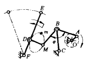
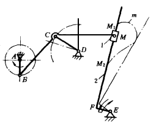
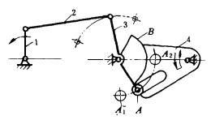

机构示意图
机构特性简介
利用连杆曲线作单侧停歇

主动曲柄AO通过四杆机构OABC的连杆AB带动II级杆组MDF，使从动件EF作间歇摆动。连杆AB上 M点的曲线轨迹m类似椭圆形，选DM的长度近似等于M点处曲线段的曲率半径，D点相当于曲率中心，以期M点在此段曲线处近似实现杆EF停歇不动，停歇时间约等于曲柄转过半周的时间。 各杆长与其夹角可按下列数据比例选取：AB=BC=BM=1，AO=0.305，CO=0.76，φ=114°，MD＝0.66，FD=0.8，CF=1.66，OF=2.36。
利用连杆曲线直线段作单侧停歇

主动曲柄AB通过四杆机构ABCD的连杆BC 上的M点带动II级杆组MFE，使从动件EF绕E点作间歇摆动。连杆上M点的轨迹m中M 1 M 2 段近似直线，在此位置上连杆带动滑块1在从动件2上移动，使从动导杆2近似停歇，实现单侧停歇摆动。
利用沟槽作单侧停歇

主动曲柄l通过连杆2使摇杆3摆动，摇杆3上的滚子A 在A 1 A 2 圆弧范围内摆动，从而带动从动摆杆4摆动。但当滚子A由摆杆4的沟槽中脱离时，摇杆3上的锁止弧B锁止摆杆4，使摆杆4停歇不动、该机构停歇只在一侧，即当滚子A脱离摆杆4的沟槽时停歇，当滚子进入摆杆4槽内时，将继续带动摇杆4作摆动。